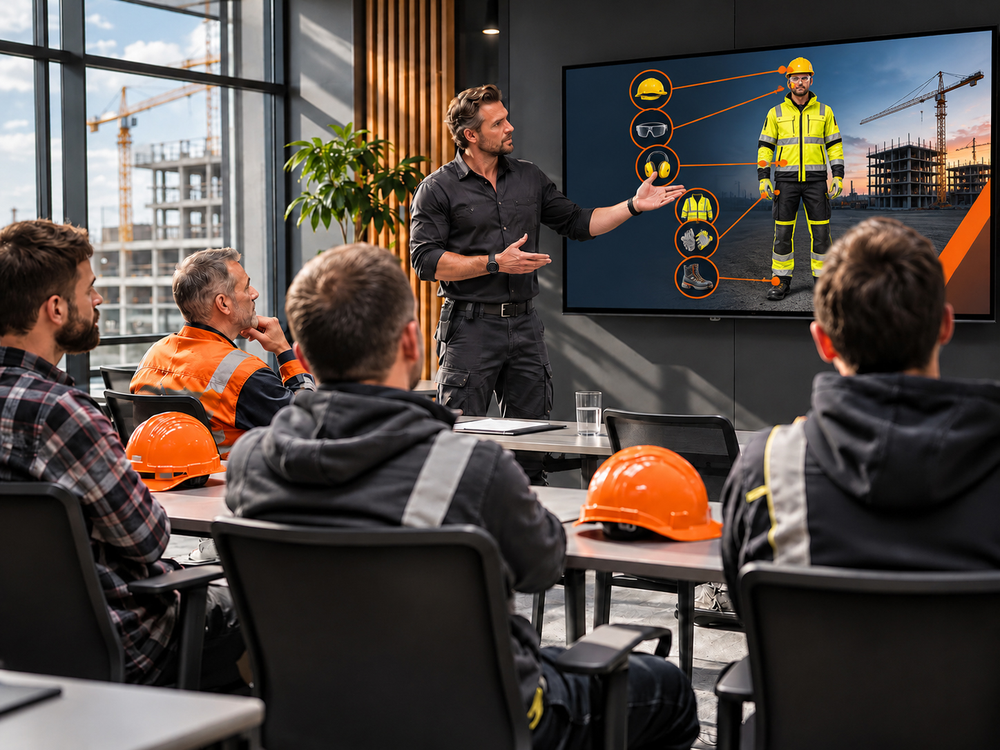
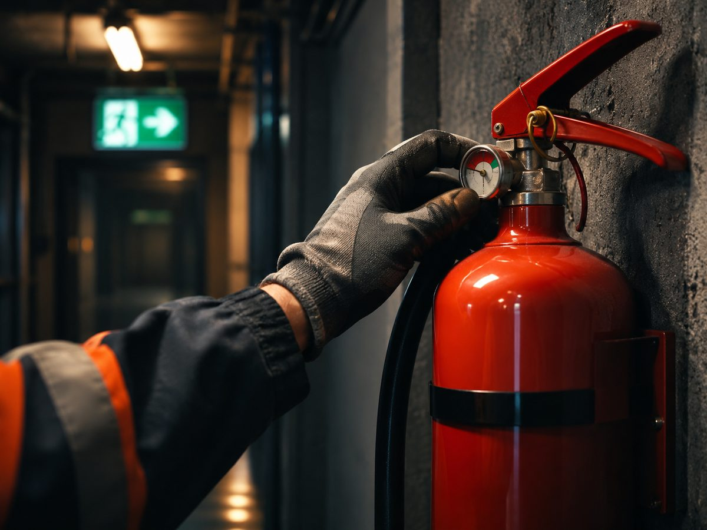

BOZP · Civilná ochrana · Ochrana pred požiarmi
Bezpečnosť práce bez kompromisov
Komplexné služby v oblasti BOZP – od bezpečnostnotechnickej služby až po odborné školenia v súlade so slovenskou legislatívou.
BOZP nevnímame ako formalitu, ale ako riadený proces, ktorý chráni vašu firmu aj ľudí.
Zvyšujeme bezpečnosť na pracoviskách a staveniskách, pripravujeme zamestnancov a zastupujeme vás pri kontrolách Inšpektorátu práce a Štátneho požiarneho dozoru.
Služby
Všetky služby →Bezpečnostnotechnická služba (BTS)
Dodávateľský výkon BTS – hodnotenie rizík, dokumentácia BOZP, dohľad nad pracoviskami.
Viac o službe →Koordinácia na stavenisku
Koordinátor bezpečnosti v projektovej fáze aj pri realizácii stavebných prác.
Viac o službe →
Školenie BOZP
Úvodné a opakované školenia zamestnancov a vedúcich zamestnancov na mieru.
Viac o službe →
Ochrana pred požiarmi
Kompletný servis v plnení povinností zamestnávateľa na úseku ochrany pred požiarmi.
Viac o službe →O nás
Skúsenosti z praxe, oprávnenia od NIP.
Pro Safety s. r. o. vznikla v roku 2025 ako nástupca fyzických osôb podnikajúcich v oblasti BOZP. Máme oprávnenia Národného inšpektorátu práce na školenia BOZP, bezpečnostnotechnickú službu a ochranu pred požiarmi dodávateľským spôsobom. Služby vykonávajú osoby s odbornou spôsobilosťou a dlhoročnou praxou.
Pomáhame pri vyšetrovaní a riešení závažných pracovných úrazov, chorôb z povolania, havárií a požiarov a zastupujeme zmluvných partnerov pri kontrolách Inšpektorátu práce a Štátneho požiarneho dozoru.
Kancelária Prosafety
Poďme nastaviť bezpečnosť vo vašej firme.
Štúrova 3/6, 040 01 Košice